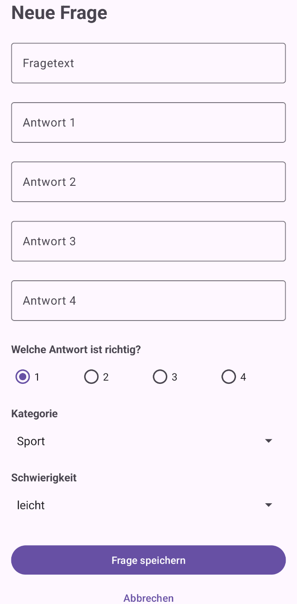

Modul 335 Mobile Applikationen, Tag 4 Nachmittag. Arbeitszeit 45 Minuten. Version 5 vom 06.09.2026.
Du baust ein Formular und schreibst damit zum ersten Mal in deine Datenbank. Warum das so geht, steht in der Einführung zu 08B. Fertig bist du, wenn deine Fragenliste eine selbst angelegte Frage zeigt und der Titel oben Fragen (31) trägt.

| Baustein | Wofür |
|---|---|
| TextInputLayout, TextInputEditText | Rahmen und Feld, mit Platz für eine Fehlermeldung. Aus 06B |
| RadioGroup | Neu. Behälter für RadioButton, er hält genau einen gewählt |
| ScrollView | Aus 05D. Sie darf genau ein Child haben |
| FloatingActionButton | Neu. Der abgerundete Knopf über der Liste, Präfix fab |
| Type.ime() | Die Tastatur in den Insets. Aus 06B |
| clQuestionEdit, rgCorrect | Der Root des neuen Layouts, und die Gruppe der Knöpfe rbCorrect1 bis rbCorrect4 |
A1Die Texte und das Layout. 10 Min
Zuerst die Texte in res/values/strings.xml:
<!-- Formular für eine neue Frage, ab 08B --> <string name="fab_add_question">Neue Frage anlegen</string> <string name="title_question_new">Neue Frage</string> <string name="hint_question_text">Fragetext</string> <string name="hint_answer1">Antwort 1</string> <!-- bis hint_answer4 --> <string name="label_correct_answer">Welche Antwort ist richtig?</string> <string name="radio_1">1</string> <!-- bis radio_4 --> <string name="label_category">Kategorie</string> <string name="label_difficulty">Schwierigkeit</string> <string name="btn_save_question">Frage speichern</string> <string name="btn_cancel">Abbrechen</string> <string name="error_question_text">Mindestens 10 Zeichen.</string> <string name="error_answer_required">Diese Antwort ist Pflicht.</string>
Neue Layout-Datei anlegen. Rechtsklick auf res/layout, New, Layout Resource File, Name activity_question_edit, Root element androidx.constraintlayout.widget.ConstraintLayout. Drei Ebenen, jede mit einem Grund: nur der Root bekommt den Insets-Block, die ScrollView macht elf Felder plus Tastatur erreichbar, und im LinearLayout braucht es keine Anker.
<androidx.constraintlayout.widget.ConstraintLayout xmlns:android="http://schemas.android.com/apk/res/android" xmlns:app="http://schemas.android.com/apk/res-auto" xmlns:tools="http://schemas.android.com/tools" android:id="@+id/clQuestionEdit" android:layout_width="match_parent" android:layout_height="match_parent" tools:context=".QuestionEditActivity"> <ScrollView android:id="@+id/svQuestionEdit" android:layout_width="0dp" android:layout_height="0dp" ... hier die vier Anker Top, Bottom, Start und End auf parent ...> <LinearLayout android:layout_width="match_parent" android:layout_height="wrap_content" android:orientation="vertical"> <!-- tvEditTitle, 26sp und fett, Text title_question_new --> <!-- hier hinein kommt alles Weitere --> </LinearLayout> </ScrollView> </androidx.constraintlayout.widget.ConstraintLayout>
Der Fragetext, in das LinearLayout unter die tvEditTitle:
<com.google.android.material.textfield.TextInputLayout android:id="@+id/tilQuestionText" style="@style/Widget.Material3.TextInputLayout.OutlinedBox" android:layout_width="match_parent" android:layout_height="wrap_content" android:layout_marginTop="20dp" android:hint="@string/hint_question_text" app:errorEnabled="true"> <com.google.android.material.textfield.TextInputEditText android:id="@+id/etQuestionText" android:layout_width="match_parent" android:layout_height="wrap_content" android:inputType="textCapSentences|textMultiLine" android:maxLines="3" /> </com.google.android.material.textfield.TextInputLayout>
Die vier Antwortfelder sind derselbe Block, viermal kopiert. Jedes Mal ändern:
| Was | Wird |
|---|---|
| id des Rahmens | tilAnswer1 bis tilAnswer4 |
| id des Felds | etAnswer1 bis etAnswer4 |
| Beschriftung | hint_answer1 bis hint_answer4 |
| Im Feld | inputType="textCapSentences", maxLines="1" |
| Abstand oben | fällt weg, nur der Fragetext hat ihn |
Unter tilAnswer4 eine TextView mit label_correct_answer, 15sp und fett, darunter die Auswahl:
<RadioGroup android:id="@+id/rgCorrect" android:layout_width="match_parent" android:layout_height="wrap_content" android:layout_marginTop="4dp" android:orientation="horizontal"> <RadioButton android:id="@+id/rbCorrect1" android:layout_width="0dp" android:layout_height="wrap_content" android:layout_weight="1" android:checked="true" android:text="@string/radio_1" /> <!-- rbCorrect2 bis rbCorrect4 genauso, mit radio_2 bis radio_4 und ohne das android:checked --> </RadioGroup>
Nur der erste Knopf hat android:checked="true". Ohne Vorauswahl liefert getCheckedRadioButtonId() den Wert -1, und darauf passt keiner der vier Knöpfe.
Der Rest kommt darunter, alles mit layout_width="match_parent" und layout_height="wrap_content":
| Element | id | Dazu |
|---|---|---|
| TextView | tvCategoryLabel | label_category, 15sp, fett, marginTop 16dp |
| Spinner | spnEditCategory | marginTop 4dp |
| TextView | tvDifficultyLabel | label_difficulty, sonst gleich |
| Spinner | spnEditDifficulty | marginTop 4dp |
| Button | btnSaveQuestion | btn_save_question, marginTop 28dp |
| Button | btnCancelQuestion | btn_cancel, style Widget.Material3.Button.TextButton |
Der TextButton ist ein Knopf ohne Fläche. Speichern ist die Aktion, die man will, Abbrechen der Ausweg. Zwei gleich aussehende Knöpfe laden dazu ein, den falschen zu treffen.
A2Die Klasse und der Eintrag im Manifest. 4 Min
Rechtsklick auf dein Paket ch.wiss.m335.quiz, New, Java Class, Name QuestionEditActivity:
public class QuestionEditActivity extends AppCompatActivity { /** Log-Tag für das ganze Modul 335. */ private static final String TAG = "Modul335"; @Override protected void onCreate(Bundle savedInstanceState) { super.onCreate(savedInstanceState); EdgeToEdge.enable(this); setContentView(R.layout.activity_question_edit); // Der Insets-Block wie in deiner AdminActivity, mit clQuestionEdit // als Root. Eine Stelle ist neu, und Type.ime() ist die Tastatur: Insets systemBars = insets.getInsets( WindowInsetsCompat.Type.systemBars() | WindowInsetsCompat.Type.ime()); Log.d(TAG, "QuestionEditActivity onCreate"); } }
Die Importe holt der Editor mit Alt+Enter. Dann der Eintrag in AndroidManifest.xml:
<activity android:name=".QuestionEditActivity" android:exported="false" android:windowSoftInputMode="adjustResize" />
adjustResize steht bei jeder Activity mit einem Eingabefeld. Es allein reicht nicht, das hast du in 06B gesehen. Mit EdgeToEdge muss die App den Platz selbst freihalten, dafür ist das Type.ime() da.
A3Der Knopf, der ihn öffnet. 4 Min
Öffne res/layout/activity_admin.xml. Der abgerundete Knopf gehört direkt in das ConstraintLayout, nicht in die Liste hinein:
<com.google.android.material.floatingactionbutton.FloatingActionButton android:id="@+id/fabAddQuestion" android:layout_width="wrap_content" android:layout_height="wrap_content" android:layout_marginEnd="8dp" android:layout_marginBottom="8dp" android:contentDescription="@string/fab_add_question" android:src="@android:drawable/ic_input_add" app:layout_constraintBottom_toBottomOf="parent" app:layout_constraintEnd_toEndOf="parent" />
Ein Knopf am Ende der dreissig Zeilen wäre erst nach dem Scrollen erreichbar, der abgerundete Knopf liegt darüber. Das @android:drawable/ ist nicht dein R, das Bild kommt von Android selbst.
Jetzt die AdminActivity. Als Feld zu adapter dazu, und in onCreate nach rvQuestions.setAdapter(adapter):
/** Der runde Knopf unten rechts. Er öffnet das leere Formular. */ private FloatingActionButton fabAddQuestion;
fabAddQuestion = findViewById(R.id.fabAddQuestion); // Ohne Extra im Intent. Das Formular weiss damit, dass es eine neue // Frage anlegen soll. In 08C kommt hier eine id dazu. fabAddQuestion.setOnClickListener(v -> startActivity(new Intent(this, QuestionEditActivity.class)));
So prüfst du Teil A.
Antwort 1 bis Antwort 4.| Baustein | Wofür |
|---|---|
| questionDao().insert(...) | Deine Methode aus 07C. Sie schreibt eine Zeile und gibt die id zurück, die Room vergeben hat |
| finish() | Schliesst diesen Bildschirm. Der darunter kommt wieder zum Vorschein. Aus 05B |
| setError("..."), setError(null) | Malt das Feld rot und räumt die Meldung weg. Gehört auf das TextInputLayout, nie auf das TextInputEditText |
| isNameValid() | Deine Vorlage für B3. Sie steht in deiner GameActivity, aus 06B |
Wer wen aufruft, steht als Bild in der Einführung. Die Regel dahinter: erst prüfen, dann bauen, dann speichern. isFormValid steht darum als Wächter ganz oben in onSaveClicked.
B1Die Felder einsammeln, die Auswahlen füllen. 7 Min
Alles in diesem Schritt passiert in QuestionEditActivity.java. Als Konstanten, über die Felder:
/** So viele Zeichen muss ein Fragetext mindestens haben. */ private static final int MIN_TEXT_LENGTH = 10; /** Die drei Schwierigkeitsstufen, genau so wie sie in den Daten stehen. */ private static final List<String> DIFFICULTIES = Arrays.asList("leicht", "mittel", "schwer");
Klein geschrieben, und das ist kein Schönheitsfehler. Der Text wandert unverändert in die Spalte difficulty. Ein grosses L in Leicht bringt eine zweite Schreibweise in deine Tabelle, und danach passt kein Vergleich mehr.
Als Felder darunter, und in onCreate nach den Insets:
private TextInputLayout tilQuestionText; private TextInputEditText etQuestionText; private TextInputLayout[] answerLayouts; private TextInputEditText[] answerFields; private RadioGroup rgCorrect; private Spinner spnEditCategory; private Spinner spnEditDifficulty;
tilQuestionText = findViewById(R.id.tilQuestionText); etQuestionText = findViewById(R.id.etQuestionText); rgCorrect = findViewById(R.id.rgCorrect); spnEditCategory = findViewById(R.id.spnEditCategory); spnEditDifficulty = findViewById(R.id.spnEditDifficulty); // Die vier Antwortfelder in ein Array. Danach läuft jede Prüfung in // einer Schleife statt vier Mal untereinander. answerLayouts = new TextInputLayout[]{ findViewById(R.id.tilAnswer1), findViewById(R.id.tilAnswer2), findViewById(R.id.tilAnswer3), findViewById(R.id.tilAnswer4) }; answerFields = new TextInputEditText[]{ findViewById(R.id.etAnswer1), findViewById(R.id.etAnswer2), findViewById(R.id.etAnswer3), findViewById(R.id.etAnswer4) }; spnEditCategory.setAdapter(new ArrayAdapter<>(this, android.R.layout.simple_spinner_dropdown_item, realCategories())); spnEditDifficulty.setAdapter(new ArrayAdapter<>(this, android.R.layout.simple_spinner_dropdown_item, DIFFICULTIES)); findViewById(R.id.btnCancelQuestion).setOnClickListener(v -> finish());
Und als neue Methode unter onCreate:
private List<String> realCategories() { List<String> all = QuestionBank.categories(); return all.subList(1, all.size()); }
subList(1, size) schneidet den ersten Eintrag weg, Alle steht zuoberst. Schreibst du die vier Wörter von Hand hin, hast du dieselbe Liste an zwei Orten, und der zweite wird vergessen.
B2Speichern und zurück. 6 Min
Zuerst die zwei Helfer, denn die nächste Methode braucht sie. Sie kommen ans Ende der Klasse, nach dem Zeitungsprinzip aus 05A.
private String textOf(TextInputEditText field) { return field.getText() == null ? "" : field.getText().toString().trim(); } private int selectedAnswerIndex() { int checkedId = rgCorrect.getCheckedRadioButtonId(); if (checkedId == R.id.rbCorrect2) { return 1; } // rbCorrect3 und rbCorrect4 genauso, mit 2 und 3. // Auch der Fall nichts gewählt landet unten. Im Layout ist der erste // Knopf vorausgewählt, also kann das nicht vorkommen. return 0; }
textOf ist deine currentName aus 06B, nur mit einem Parameter statt einem festen Feld. Das trim hat denselben Grund wie dort: drei Leerschläge sind keine Antwort, sehen für length aber aus wie drei Buchstaben. Und if statt switch wie in 01C, die R-Nummern sind keine Konstanten.
Die Methode, die speichert, und ihr Listener. Der kommt in onCreate über die Zeile mit btnCancelQuestion:
private void onSaveClicked() { QuestionEntity question = new QuestionEntity(); question.setText(textOf(etQuestionText)); question.setAnswer1(textOf(answerFields[0])); question.setAnswer2(textOf(answerFields[1])); question.setAnswer3(textOf(answerFields[2])); question.setAnswer4(textOf(answerFields[3])); // Die richtige Antwort wird als Text gespeichert, nicht als Nummer. // So sieht QuestionEntity von aussen gleich aus wie Question. question.setCorrectAnswer(textOf(answerFields[selectedAnswerIndex()])); question.setCategory((String) spnEditCategory.getSelectedItem()); question.setDifficulty((String) spnEditDifficulty.getSelectedItem()); // Die id wird nicht gesetzt. Room vergibt sie und gibt sie zurück. long newId = QuizDatabase.getInstance(this).questionDao().insert(question); Log.d(TAG, "question inserted, id=" + newId); // finish schliesst nur diesen Bildschirm. Die Liste darunter lebt weiter. finish(); }
findViewById(R.id.btnSaveQuestion).setOnClickListener(v -> onSaveClicked());
id wird nicht gesetzt, und das ist die wichtigste Zeile, die hier fehlt. Room vergibt sie beim Einfügen selbst und gibt sie zurück. Wer question.setId(1) schreibt, überschreibt die Frage Nummer 1 aus dem Startbestand. Ohne Fehlermeldung.Du hast der Fragenliste nirgends gesagt, dass sie neu laden soll. finish() schliesst nur das Formular, die Liste darunter war nie weg, also läuft onResume und nicht onCreate. Ausprobieren kannst du es in Übung 1.
B3Die Prüfung. Diese Methode schreibst du selbst. 10 Min
Mach zuerst den Gegentest. Tipp den abgerundeten Knopf an und dann sofort auf Frage speichern, ohne etwas einzutippen. Eine leere Frage steht jetzt in deiner Liste, ohne Text und ohne Antworten. Genau das verbietet das Prüfungsblatt der Leistungsbeurteilung: "Fehleingaben sollen vor dem Speichern abgefangen werden." Löschen kannst du sie erst in 08C.
Deine Vorlage liegt in deinem eigenen Code. Mach die GameActivity auf und schau dir isNameValid an: Feld auslesen, Regel prüfen, Meldung an den Rahmen hängen, wieder wegräumen. Der Unterschied ist die Zahl der Felder, eines gegen fünf.
Die Regel für den Fragetext steht hier vollständig, im selben Aufbau wie deine isNameValid. Die Schleife über die vier Antwortfelder baust du selbst, nach demselben Muster:
private boolean isFormValid() { if (textOf(etQuestionText).length() < MIN_TEXT_LENGTH) { tilQuestionText.setError(getString(R.string.error_question_text)); return false; } tilQuestionText.setError(null); ... hier deine Schleife über answerFields ... ... ist ein Feld leer, dann die Meldung error_answer_required am passenden answerLayouts ... ... ist es gefüllt, dann setError(null) am passenden answerLayouts ... return true; }
Zwei Hinweise, mehr brauchst du nicht. answerLayouts und answerFields stehen in derselben Reihenfolge, der Rahmen zu answerFields[2] ist answerLayouts[2]. Und ein Feld ist leer, wenn textOf(...).isEmpty() wahr ist. Dazu der Wächter, ganz an den Anfang von onSaveClicked:
if (!isFormValid()) { Log.d(TAG, "save rejected, form not valid"); return; }
Starte und tipp wieder sofort auf Frage speichern. Der Bildschirm schliesst sich nicht mehr, im Logcat steht save rejected, form not valid. Fünf Felder sind leer, und du siehst eine Meldung. Die Methode steigt beim ersten Fehler aus, alles danach läuft nie. Bei fünf leeren Feldern sind das fünf Runden Speichern.
Das ist kein Fehler in deinem Code, sondern in der Bauart. In 06B war sie richtig, dort gab es ein einziges Feld. Bau um: die Methode merkt sich in einer Variablen, dass etwas nicht stimmt, und prüft weiter.
private boolean isFormValid() { boolean valid = true; if (textOf(etQuestionText).length() < MIN_TEXT_LENGTH) { tilQuestionText.setError(getString(R.string.error_question_text)); valid = false; } else { tilQuestionText.setError(null); } ... deine Schleife, jetzt nach demselben Muster ... return valid; }
Das else ist neu, und es ist kein Schönheitsfehler. Vorher stand setError(null) ohne else, und das war richtig: nach einem return kam man dort nicht mehr vorbei. Jetzt läuft die Methode immer bis zum Schluss. Ohne else würde jede Regel ihre eigene Meldung sofort wieder löschen.
So prüfst du Teil B.
Fragen (31).tag:Modul335 steht question inserted, id=31.seed skipped, count=31.Freiwillig, daheim. Bei Übung 3 steht ein Prompt dabei, wenn du mit einer KI arbeiten willst.
Die fünf neuen Methoden, die sieben neuen Felder und die zwei Konstanten brauchen je ein Javadoc. Bei isFormValid gehört der Satz hinein, warum sie weiterprüft statt auszusteigen, bei DIFFICULTIES der Grund für die Kleinschreibung. Dazu der Klassenkommentar: was der Bildschirm macht, in welcher Reihenfolge, was er noch nicht macht und warum die Klasse darum nicht QuestionNewActivity heisst.
Dann der Satz, der nicht mehr stimmt. Such im Projekt nach 08B. In deiner AdminActivity steht über onResume ein Satz, der 08B als Zukunft beschreibt. Mach eine Begründung daraus.
So prüfst du: Lies deinen Klassenkommentar so, als hättest du den Code nie gesehen. Steht dort, in welcher Reihenfolge gearbeitet wird? Und nach der Suche nach 08B darf keine Stelle mehr von etwas Zukünftigem sprechen.
Verschieb in deiner AdminActivity den Inhalt von onResume ans Ende von onCreate und lass onResume leer stehen. Starte, leg eine Frage an, komm zurück. Stell es danach wieder zurück.
So prüfst du: Deine neue Frage steht nicht in der Liste, der Zähler oben zeigt die alte Zahl. Verlass die Liste ganz und öffne sie neu, dann ist sie da. Schreib in einem Satz auf, warum.
Leg eine Frage an, bei der Antwort 1 und Antwort 3 gleich lauten. Sie wird gespeichert, und im Spiel wäre sie unlösbar. Bau eine Methode hasDuplicateAnswers, die true liefert, wenn zwei der vier Antworten gleich sind, mit equalsIgnoreCase. Ruf sie in isFormValid auf und mal die Antwortfelder rot an.
So prüfst du: Zwei gleiche Antworten lassen sich nicht mehr speichern, und Bern gegen bern zählt auch als gleich. Diese Frage kommt in 08D als Testfall wieder.
Erklär einer anderen Person in zwei Sätzen, warum isFormValid nicht beim ersten Fehler aussteigt.
So prüfst du: Wenn dein Gegenüber danach nicht sagen kann, was der Benutzer davon merkt, war es zu allgemein.
Hast du niemanden zur Hand, dann nimm eine KI als Gegenüber. Kopier diesen Prompt.
Rolle: Du bist Prüfungsexperte für ein Modul über Android-Apps in Java. Ich bin Lernender und habe gerade eine Formularprüfung über fünf Felder gebaut. Ablauf: 1. Frag mich, warum isFormValid nicht beim ersten Fehler aussteigt. Warte auf meine Antwort. 2. Sag mir, was an meiner Antwort stimmt und was fehlt. 3. Frag mich, was der Benutzer davon auf dem Bildschirm merkt. Warte wieder auf meine Antwort. 4. Frag mich zuletzt, wozu das else bei setError(null) da ist. Regeln: Du gibst mir keinen Code und keine fertige Erklärung, bevor ich geantwortet habe. Du stellst eine Frage nach der anderen. Du bewertest jede Antwort, bevor du weitergehst. Ziel: Der Auftrag ist zu Ende, wenn ich in zwei Sätzen sagen kann, warum die Methode weiterprüft, und was der Benutzer dadurch auf dem Bildschirm sieht.
Zuerst die Pflichtaufgabe fertig und lauffähig. Deine neue Frage steht in der Liste, aber im Spiel kommt sie nie dran, denn die GameActivity holt ihre Fragen weiterhin aus QuestionBank.
Schreib auf, welche Stellen sich ändern müssten, damit das Spiel aus der Datenbank liest, und welche nicht. Schau dir Question und QuestionEntity nebeneinander an. Gebaut wird nicht, der Umbau ist Pflicht in 08C. Keine Musterlösung. War deine Liste unvollständig, schreib dazu, was du übersehen hast.
| Symptom | Wahrscheinliche Ursache | Was du machst |
|---|---|---|
| Eine id gibt es zweimal | Beim Kopieren der Antwortfelder in A1 ist eine id nicht geändert worden | Alle acht ids durchgehen, tilAnswer1 bis etAnswer4 |
| Viermal steht Antwort 1 im Formular | Beim Kopieren ist android:hint stehen geblieben | Die drei Beschriftungen ändern. Siehe die Tabelle in A1. Nichts meldet diesen Fehler |
ActivityNotFoundException beim Antippen des abgerundeten Knopfs | Der Eintrag im Manifest fehlt | Ergänzen. Siehe A2 |
| Die Tastatur legt sich über das Feld | Im Insets-Block fehlt | WindowInsetsCompat.Type.ime() | Ergänzen. adjustResize allein reicht nicht. Siehe A2 |
| Die zwei Auswahlen sind leer | Nach A3 kein Fehler | Nichts tun. Gefüllt werden sie in B1 |
| Die Kategorieauswahl hat fünf Einträge | categories() statt realCategories() | Umstellen. Siehe B1 |
| Speichern tut nach B2 nichts, und im Logcat steht nichts | Der setOnClickListener am btnSaveQuestion fehlt | Ergänzen. Siehe B2. Dieser Fehler meldet sich nirgends |
| Die neue Frage steht gar nicht in der Liste | Deine AdminActivity lädt in onCreate statt in onResume | Zurück nach 08A schauen. Siehe auch Übung 1 |
| Eine bestehende Frage ist verschwunden, dafür steht deine an ihrer Stelle | In onSaveClicked steht ein question.setId(...) | Die Zeile löschen. Room vergibt die id selbst. Siehe B2 |
| Beim Speichern nur eine rote Meldung, obwohl fünf Felder leer sind | Vor dem Umbau in B3 kein Fehler. Danach: in der Schleife steht noch ein return false | Alle Regeln durchgehen, keine darf mit return aussteigen. Siehe B3 |
| Eine rote Meldung bleibt stehen, obwohl das Feld jetzt stimmt | Ab dem Umbau in B3: das else mit setError(null) fehlt | Ergänzen. Jede Regel braucht ihr eigenes else. Siehe B3 |
| Die neue Frage kommt im Spiel nie dran | Kein Fehler | Nichts tun. Das Spiel liest noch aus QuestionBank. Siehe die Zusatzaufgabe |
Modul 335 | Tag 4 Nachmittag | Auftrag 08B | Version 5 | 06.09.2026